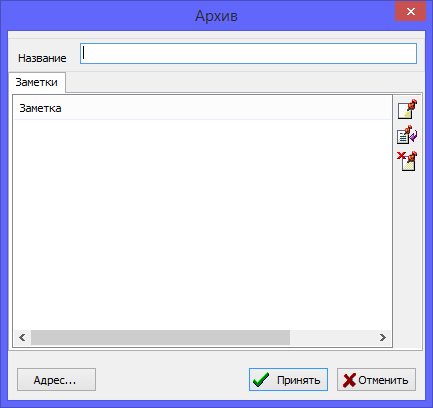

Записи об архивах объединяют источники, находящиеся в одном месте хранения. Архивом может быть не только государственное или частное архивное учреждение, это может быть также и частная коллекция или определенное место хранения документов.
У записи архива, помимо указания названия архива и перечня имеющихся единиц хранения, можно для удобства также указать адрес и другую контактную информацию для связи. Также запись можно снабжать заметками о режиме работы организации и с прочей информацией.

Все имеющиеся в базе данных архивы доступны через единую таблицу на закладке "Архивы" основного рабочего окна. Справа от таблицы - в сводке по записи архива, можно просмотреть информацию, а также список всех источников, которые согласно базе данных, хранятся в данном архиве.